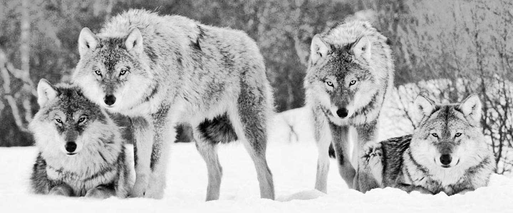

Lobos
a elegigo caminar...
HACIA LO SALVAJE
La realidad demuestra que se matan todos los lobos que se pueden, legal o ilegalmente.
Rodeados de un aura de belleza y libertad...

los lobos inspiran reverencia, respeto...
son muchas las personas que sienten una íntima conexión...
que aman rabiosamente a su familia, cuidan de los suyos...

su paciencia, capacidad de liderazgo, cooperación, presencia…
y resiliencia incluso ante el fracaso y la muerte...
nunca dejan de jugar, son como niños humanos con amor y odio en busca del equilibrio…
astutos, ellos están ahí, en una carrera constante hacia lo salvaje...

van hacia lo salvaje y vienen hacia ti.
Los seres humanos matamos más que la muerte